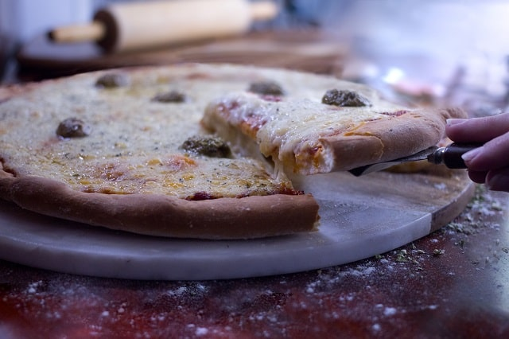

Pizza au cajourella
Préparation : 15 min Cuisson : 15 min Portions : 4

En tant que véganes, une chose nous manquait beaucoup : la pizza. C'est de notre amour quasi passionnel pour ce met qu'est né le cajourella, notre fromage au cajou façon mozarella di bufala. La première rencontre entre le cajourella et la pâte à pizza a été extraordinaire. C'est ce moment de pure joie que l'on veut partager avec vous.
Ingrédients
- 1 Cajourella Porat
- 4 Végé Burgers Porat saveur Originale (1 paquet)
- 1 croute à pizza
- 1 sauce à pizza
- Tomates cerises fraîches
- 1/2 oignon rouge
- Olives kalamata dénoyautées
- Roquette
Préparation
- Préchauffer le four à 375˚F.
- Couper les tomates cerises en deux et émincer l'oignon.
- Étaler uniformément la sauce à pizza sur la croûte.
- Ajouter les oignons, les tomates cerises et les olives.
- Défaire les burgers à la main en petits morceaux égaux et les déposer sur la pizza.
- Faire fondre le fromage dans une casserole à basse température en brassant continuellement.
- Etaler le fromage fondu sur la pizza.
- Rajouter la roquette sur le dessus. Savourez !
Découvrir d'autres recettes